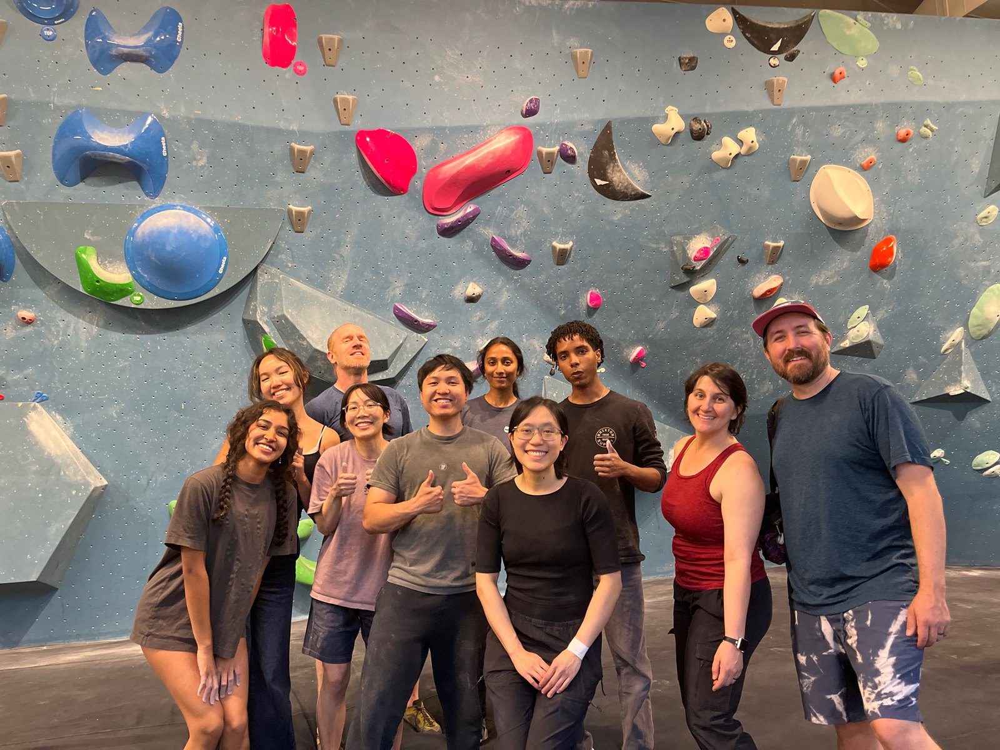
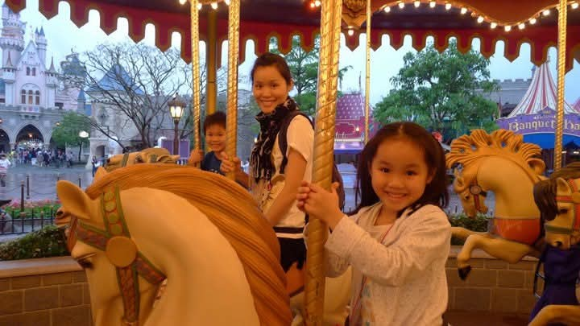

Making Disney+ search results explainable.
The Context
Over ten weeks this summer I was a PM intern on the Disney+ Search team in Seattle. Disney+ users couldn't always find what they were looking for, and the team couldn't always see why. I took on four projects across that gap: how the ranking model decides, how people type, and how the team answers its own questions.
The specifics below are kept at a high level; internal metrics and systems are confidential.
The work: 4 projects in 10 weeks The Ranker· Recent Searches· Query Understanding· Dory and Nemo
Modeling · AI-PMThe Ranker: opening the black box
Every time you search, a model decides what order your results come back in. That's the ranker. It makes those decisions after training on features, which are just the data points the model uses to decide, things like how often people click a particular result for a particular query.
The problem with ranking systems as they age is that you keep adding features on, and it gets harder and harder to attribute relevance to any one of them. We knew the features were sufficient. We didn't know whether they were efficient. And we had a specific suspicion, that the model might be leaning too hard on the search engine's own retrieval score, a bit like a student copying answers.
So with the search ML team I built the ranker's first feature-importance analysis, which measures what each feature actually contributes. Then I wired it into the training loop, so every future run measures it too. The suspicion turned out to be wrong, which was the good outcome: what mattered most was real click behavior, the closest thing the model has to ground truth. It also turned up features in the existing baseline that could be cut, which nobody had been able to see before. The point was to improve the model with purpose instead of by guessing.
On a second model, I built an automated process for choosing new features: test each candidate one at a time, measure the lift, keep the winners. Of eight candidates, three earned their place. The most useful result was a control. Adding every candidate at once performed worse than the best single feature, because overlapping features add noise faster than signal. I merged my first PR to ship the tooling, and the team reused it as the template for feature decisions.
Lesson: more features does not mean better performance.
Scope judgmentRecent Searches: finding the cheaper question
Most of our searches were people re-finding titles they had already played. My manager's twins typed the same show name into search every single evening. Search had no memory of any of it.
I wrote a full PRD for the real fix and took it through 17 reviewers across 8 dependent teams. It died at intake in week 3. The verdict was that it was buildable but not worth the effort that quarter, and the failure was mine. I had socialized the spec with every reviewer I could reach, but not with the two engineering leads who owned the resourcing decision. I optimized for accessible stakeholders over decisive ones.
Instead of pushing, I took three principles to my manager. Collect more data, scope down, work with what we have. One platform already cached recent searches on-device, so we could toggle it with a flag and measure the value of search memory with near-zero backend work. I designed it so either outcome was useful. A drop is the evidence that justifies the real build, and a flat read means we learned cheaply that the concept doesn't move metrics yet. The experiment launched in my final week and I handed it off to my successor. I gave up shipping a visible feature in exchange for a decision-grade answer.
Lesson: start with the person who can say no.
ShippingQuery Understanding: how people actually type
Users type the way they think. They search "himym," or "Toy Story Five" for a title written with a numeral, and search returned nothing. The data showed people trying constantly. They had built the expectation on other platforms and Disney+ was not meeting it. I identified the candidate query set from top search patterns, clustered with AI assistance, then owned the measurement side with analytics. An engineer built and launched the changes. For queries that used to return nothing, click precision went from single digits to the mid-80s, and abandonment on the affected number-word queries dropped high single digits. Session-level engagement rose measurably, with guardrails clean. Both changes were expected to ship at my departure.
Lesson: users bring their expectations from everywhere.
AdoptionDory and Nemo: answers with receipts
Knowledge sat across thirty-plus repositories, wikis, and people's heads, so onboarding ran on oral tradition. Every question I had cost about thirty minutes of digging across GitHub, Confluence, Jira, and internal dashboards, or interrupting a busy tech lead. This time I started with the tech lead whose approval would decide it. Then I built Dory, an AI assistant that lives inside the chat tool the team already had open. She is retrieval-augmented, or RAG, which means she looks up the real source before answering rather than reciting from memory, and cites what she found. I used keyword retrieval rather than embeddings since it is fast, cheap, and explainable. Nothing to install, no new login, and guardrails so she stays on topic. She is named after the fish who never stops searching, on the hope that she would remember more than the character does.
Two teams adopted it. The second got Nemo, the same build pointed at a completely different ranking system, and standing him up took under five days. That is when I stopped thinking of it as a tool and started thinking of it as a method. I demoed both to the product team, and they are now being handed to the org's central AI team.
Lesson: a product with zero friction beats a feature-rich one.

What I took away
Everything I presented at the end shipped or went live because of something I said no to. I cut a side investigation into children's search behavior entirely, and I held the assistant to one domain even when people asked me to widen it.
The assistant started as a conversation with a tech lead about what was slowing his team down. It became a tool, then two teams' daily habit, then a handoff that outlived my internship. None of that came from authority, all of it came from being useful.
The other half of that is harder to write down. My spec died at intake, and an engineer once shipped an experiment without checking with me first. Being a PM means depending on other people's trust, and early on that mostly felt like not being good at my job. What resolved it was noticing that every win arrived the same way the losses did, through trust I had or hadn't earned yet. I finished the summer with an engineering manager asking for my input instead of the other way around.
What is left is running without me: an experiment still live, a ranker the team can finally see inside, and two assistants answering the questions I used to answer myself.
